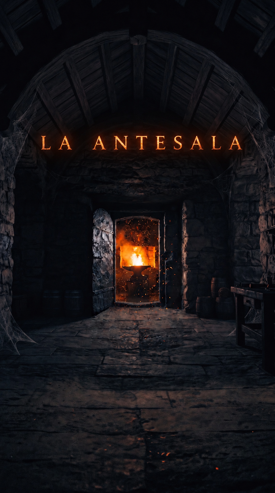

En Cuba vamos a volver a hacer el trabajo duro algo sexy. Antes de entrar a la forja, se pasa por la antesala: el lugar donde decides si estás hecho de ese material.
Disciplina diaria medible, desde tu teléfono. El estándar se cumple o no se cumple — no hay casi. Si aguantas la antesala, estás listo para la forja.
Formación de carácter con mentores. Pruebas diarias, sesiones presenciales, un grupo que no te deja esconderte.
El que entra por una puerta y sale por otra. Su testimonio es la prueba de que el método funciona.
Así se siente la antesala. Tienes 60 segundos para escribir tu compromiso de hoy. Cuando el cronómetro llegue a cero, se bloquea: lo que hay es lo que va.
Seis preguntas. Marca la que sea verdad, no la que suene bien. Esto no lo ve nadie más que tú — mentirte aquí ya es la primera señal.
Millones de personas cambiarían su vida por la tuya sin pensarlo. Tú la estás dejando pasar en automático.
Imagina esto: te despiertas en una encrucijada. Dos caminos.
Uno sigue recto al vacío: todo igual hasta el final. El mismo horario, el mismo fin de semana, el mismo «ya acepté que esto es lo que hay».
El otro te devuelve a este exacto momento. Sin recuerdos del futuro. Con una sola diferencia: sabes que esta es tu segunda oportunidad.
¿Cuál tomas?
Honesto. La antesala no es para ti hoy.
Cuando el vacío te aburra, la puerta sigue aquí.
Entonces séllalo. Una palabra, escríbela tú — el compromiso no se delega:
Mañana a esta hora la pregunta será una sola: ¿lo cumpliste? Y te repregunto una de estas seis — lo que se repite se queda.
Así empieza la antesala.
Aquí van los testimonios de quienes pasaron por la forja — y de quienes están ahora mismo en la antesala, decidiendo entrar. Historias reales, nombres reales.
Sin permanencia. El estándar es diario; el compromiso también.